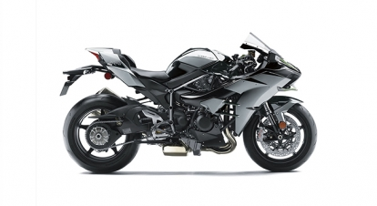

The Z H2’s most defining feature is its supercharged engine. While the idea of a supercharged engine may call to mind an extremely high powered motorcycle that only a handful of riders are able to ride in very limited conditions, Kawasaki’s modern development philosophy called for a machine that enables a wider range of riders to understand the pleasure of riding a motorcycle. Kawasaki’s supercharged engines were designed with this idea firmly in mind. The Z H2’s supercharged engine achieves the seemingly contradictory goals of ample power and easy-to-manage power delivery.